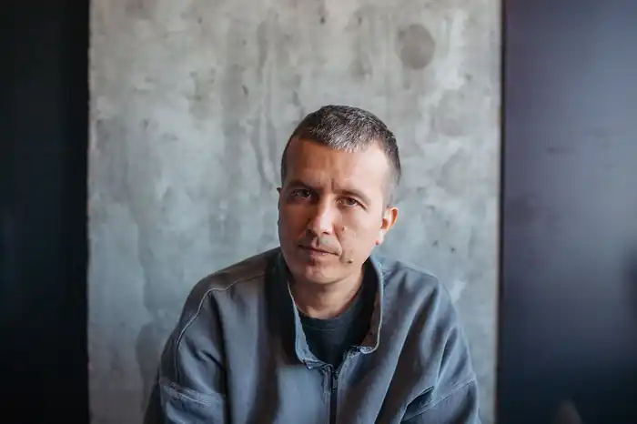

Народився 1987 року в Києві.
Був вуличним музикантом у Китаї.
Заснував гурт "Сальто назад" та лейбл "Enko". Працював з Kalush Orchestra, Джамалою, Alyona Alyona, Jerry Heil, Kola, Skofka, Kozak Siromahа. Автор понад 300 треків, серед яких україномовні сингли Надії Дорофєєвої, також "Стефанія" (Kalush Orchestra), "Чути гімн" (Skofka), "Зорі" (Kalush). Станом на червень 2023 року 20 хітів потрапили до чарту "100 Apple Music Ukraine". Придумав персонажа КилимМена, який зробив колоритнішим гурт "Kalush Orchestra". 2023 року став тренером талант-шоу "Голос країни-13".